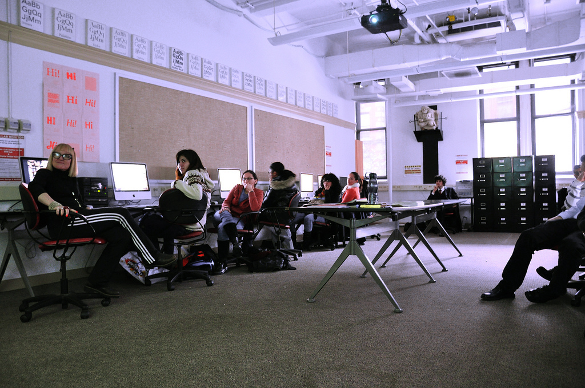
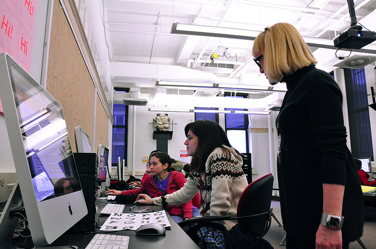

EDM, Electronic Design and Multimedia
The Robinson Center for Graphic Arts and Communication Design at the CCNY Art Department
B.F.A.
The Art Department offers both a B.F.A.in Electronic Design & Multimedia and a BA in Studio Art. While the B.F.A. is a professional degree, the The B.A. program in Art is a liberal arts degree program that balances design training with general studio arts course work.
The B.F.A. Admissions Advisor is Professor Mark Addison Smith. He can be contacted at 212 650-6451 or at msmith4@ccny.cuny.edu for B.F.A. admissions or portfolio questions.
The portfolio should demonstrate aptitude; finished, professional work is not a criterion. The committee is looking for raw ability, talent and motivation.
You may be accepted into City College and not be accepted into the B.F.A. Program. In that case, you may take EDM courses as a B.A. Art Major.
A student may also enter the B.A. program, and then transfer to the B.F.A. after completing level 10000 and 20000 courses in the major and developing a portfolio. However B.F.A. admissions are competitive, and transfer from the BA to the B.F.A. is not automatic or guaranteed.
Internal CCNY applications will not be accepted after a student has completed 72 credits overall, or 65% of credits toward the major. CCNY students should also complete 200-level courses in the major before applying to the B.F.A.
The B.F.A. has a GPA requirement of 2.5, as does the Art Department. Admissions applications for the B.F.A. are accepted in Fall and Spring. Deadlines are October 1st and February 15th. Students who are not internal applicants must also apply for admission to City College.
See the B.F.A. page for a list of requirements in the major.
B.A.
See the B.A. page for a list of requirements in the major.
Students in the Digital Design concentration will take the same department art history and art foundation requirements as students in the studio art concentration and in the B.F.A.
Of the 7 elective Art courses taken by studio Art Majors [in addition to Art History & Art foundation], students in the Digital Design concentration must take: 3/300-level EDM courses + Art 49590 Digital Design Portfolio.
Download the complete list of EDM courses and prereqs. and requirements for the B.A. Digital Design Concentration.
About EDM Admissions
The B.F.A. in Electronic Design & Multimedia
 The B.F.A. in Electronic Design & Multimedia is a professional specialization in art and design for print and screen-based media, and integrates a variety of digital media into all stages of design and production. It emphasizes a foundation in the principles of basic design as the prerequisite to intensive studio practice in design and imaging for a variety of visual communications media projects.The Art Department offers both a B.F.A.in Electronic Design & Multimedia and a BA in Studio Art. While the B.F.A. is a professional degree, the The B.A. program in Art is a liberal arts degree program that balances design training with general studio arts course work.
Admissions Requirements
Admission to the B.F.A. Program is in addition to admission to the College, and is by portfolio review. To apply, you must submit a portfolio, including three B.F.A. assignments and a writing sample. Download the B.F.A. application and portfolio guidelines from the PDF Links at the bottom of this page.The B.F.A. Admissions Advisor is Professor Mark Addison Smith. He can be contacted at 212 650-6451 or at msmith4@ccny.cuny.edu for B.F.A. admissions or portfolio questions.
The portfolio should demonstrate aptitude; finished, professional work is not a criterion. The committee is looking for raw ability, talent and motivation.
You may be accepted into City College and not be accepted into the B.F.A. Program. In that case, you may take EDM courses as a B.A. Art Major.
A student may also enter the B.A. program, and then transfer to the B.F.A. after completing level 10000 and 20000 courses in the major and developing a portfolio. However B.F.A. admissions are competitive, and transfer from the BA to the B.F.A. is not automatic or guaranteed.
Internal CCNY applications will not be accepted after a student has completed 72 credits overall, or 65% of credits toward the major. CCNY students should also complete 200-level courses in the major before applying to the B.F.A.
The B.F.A. has a GPA requirement of 2.5, as does the Art Department. Admissions applications for the B.F.A. are accepted in Fall and Spring. Deadlines are October 1st and February 15th. Students who are not internal applicants must also apply for admission to City College.
B.F.A. Program Requirements
The B.F.A. Program in Electronic Design and Multimedia requires a total of 75 credits in the major, with the balance of credits coming from the degree requirements for General Education and any remaining credits taken in Liberal Arts [or EDM] electives for a total of 120 credits.See the B.F.A. page for a list of requirements in the major.
Graduation Requirements
Students will be required to do a Thesis Project in their last semester in an area of interest. This is a large-scale self-generated project. Thesis projects are exhibited along with extensive project documentation in an exhibition at graduation. Additionally, students may be required to complete an internship in an area related to their major concentration.B.A.
B.A. Major in Art
 The B.A. in Studio Art requires a total of 42 credits in the major, with the balance of credits coming from the degree requirements for General Education and any remaining credits taken in Liberal Arts [or EDM] electives for a total of 120 credits.See the B.A. page for a list of requirements in the major.
B.A. Concentration in Digital Design
As of FA14, students in the B.A. majoring in Art will have a new concentration option. Students can select the Digital Design option [concentration code: DGTLDSN]. This option is designed for students who are not in the B.FA. but who want to focus on Digital Design, or for students who are waiting to apply for the B.F.A.Students in the Digital Design concentration will take the same department art history and art foundation requirements as students in the studio art concentration and in the B.F.A.
Of the 7 elective Art courses taken by studio Art Majors [in addition to Art History & Art foundation], students in the Digital Design concentration must take: 3/300-level EDM courses + Art 49590 Digital Design Portfolio.
Download the complete list of EDM courses and prereqs. and requirements for the B.A. Digital Design Concentration.